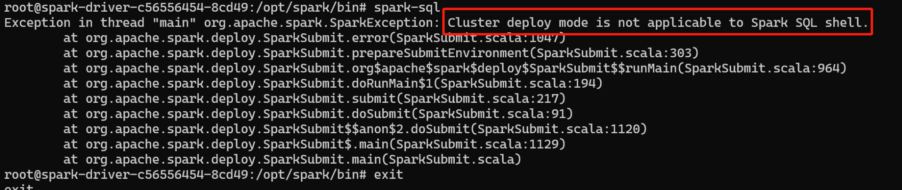

SparkSQL（官网）
1、简介
Spark SQL 是 Apache Spark 提供的一个模块，用于处理结构化数据，它使得用户能够在 Spark 上执行 SQL 查询、访问数据源、以及将 Spark 与 SQL 生态系统（如 Hive）无缝集成。

2、SparkSQL的核心概念
（1）Catalyst 查询优化器
- Catalyst 是 Spark SQL 的核心组件之一，它是一个通用的查询优化器，用于优化查询计划。优化过程可以分为下面几个阶段：
- 解析：将 SQL 查询解析成逻辑查询计划
- 分析：将逻辑查询计划分析成物理查询计划
- 优化：使用多种规则对查询计划进行优化（例如，投影下推、谓词下推等）
- 生成代码：根据物理计划生成 Java 字节码进行执行
（2）Tungsten 执行引擎
- Tungsten 是 Spark SQL 的执行引擎，它主要关注物理执行优化，旨在通过内存管理、代码生成和硬件优化等技术提升 Spark SQL 的执行效率。
（3）DataFrame 和 DataSet
- DataFrame：是 Spark 中的一个不可变的分布式数据集，它类似于关系型数据库中的表或数据框。DataFrame API 提供了基于 SQL 查询的数据操作接口，支持对结构化数据进行查询、过滤、聚合等操作。
- DataSet：是 DataFrame 的强类型版本，它结合了 RDD 和 DataFrame 的优点，能够提供编译时类型检查，同时支持 SQL 查询优化。
3、使用minikube部署SparkSQL
（1）由于sparksql不适用于cluster模式，因此单独建立一个local模式的pod来进行实验
- 使用sparksql-deployment.yaml文件部署spark-local环境
kubectl apply -f sparksql-deployment.yaml
- 查看pod状态，确认已正常运行
kubectl get pods
（2）使用SparkSQL进行查询
- 复制数据原文件到spark-local所在的pod中，下面命令中需要替换为自己的spark-local所在的pod名
kubectl cp data1.txt spark-local-5549987b6c-pk5vx:/opt/spark/work-dir
kubectl cp data2.txt spark-local-5549987b6c-pk5vx:/opt/spark/work-dir
- 进入spark-local所在的pod
kubectl exec -it spark-local-5549987b6c-pk5vx -- bash
- 启动sparksql
spark-sql
（3）进行专利文献数据查询cite75_99.txt
- 建立表格并导入文件数据
CREATE TABLE patents (
CITING STRING,
CITED STRING
)
USING csv
OPTIONS (path '/opt/spark/work-dir/data1.txt', header 'true', delimiter ',');
- 查询一 被引用列表
CREATE TABLE citation_results
USING csv
OPTIONS (
path '/opt/spark/work-dir/output/citation_results',
header 'true'
) AS
SELECT
CITED,
CONCAT_WS(',', COLLECT_LIST(CITING)) AS CITING_AGG
FROM
patents
GROUP BY
CITED;
- 查询二 被引用次数
CREATE TABLE citation_count_results
USING csv
OPTIONS (
path '/opt/spark/work-dir/output/citation_count_results',
header 'true'
) AS
SELECT
cited,
COUNT(*) AS citation_count
FROM
patents
GROUP BY
cited;
- 查询三 被引用次数直方图
- 先创建临时视图
CREATE OR REPLACE TEMP VIEW cite_count AS
SELECT
cited,
COUNT(*) AS ct
FROM
patents
GROUP BY
cited;
- 再进行查询
CREATE TABLE cite_count_results
USING csv
OPTIONS (
path '/opt/spark/work-dir/output/cite_count_results',
header 'true'
) AS
SELECT
ct,
COUNT(*) AS ct_count
FROM
cite_count
GROUP BY
ct;

（4）进行专利文献数据查询apat63_99.txt
- 先导入表
CREATE TABLE patent_details (
PATENT STRING,
GYEAR INT,
GDATE INT,
APPYEAR STRING,
COUNTRY STRING,
POSTATE STRING,
ASSIGNEE STRING,
ASSCODE INT,
CLAIMS STRING,
NCLASS INT,
CAT INT,
SUBCAT INT,
CMADE STRING,
CRECEIVE STRING,
RATIOCIT STRING,
GENERAL STRING,
ORIGINAL STRING,
FWDAPLAG STRING,
BCKGTLAG STRING,
SELFCTUB STRING,
SELFCTLB STRING,
SECDUPBD STRING,
SECDLWBD STRING
)
USING csv
OPTIONS (
path '/opt/spark/work-dir/data2.txt',
header 'true',
delimiter ',',
inferSchema 'true'
);
- 查询四 年份或国家专利数统计
CREATE TABLE patent_count_by_year_country
USING csv
OPTIONS (
path '/opt/spark/work-dir/output/patent_count_by_year_country',
header 'true'
) AS
SELECT
GYEAR,
COUNTRY,
COUNT(*) AS patent_count
FROM
patent_details
GROUP BY
GYEAR,
COUNTRY;
（5）所有的查询结果都以文件的形式存放在对应目录下
- 先退出sql命令行
exit;
- 再打开输出目录
cd output
- 再进入对应目录查看输出文件列表
- 进入任意一个目录中
cd citation\_results
- 可以查看到文件的具体内容（下面的part-00000-96701e9c-2270-4f47-ac3e-2901da3ca863-c000.csv需替换为自己想要查看的文件名）
cat part-00000-96701e9c-2270-4f47-ac3e-2901da3ca863-c000.csv